Experiência na Tamandutech (Equipe de Robótica da UFABC)
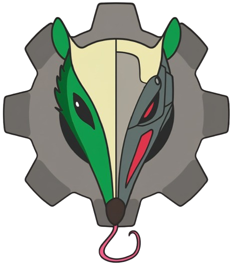
Em julho de 2025, dei um passo muito importante na minha trajetória técnica ao ingressar na Tamandutech, a equipe oficial de robótica da Universidade Federal do ABC (UFABC). A Tamandutech é reconhecida como uma das maiores e mais respeitadas equipes de robótica do país, com atuação em diversas modalidades, como Combate, Hóquei, Seguidor de Linha, Sumo e Sumo LEGO. O grupo possui um histórico impressionante de títulos e troféus conquistados em competições regionais e nacionais, o que torna o processo de ingresso altamente competitivo.
Para fazer parte dessa equipe, os candidatos passam por um rigoroso processo seletivo, composto por dinâmicas de grupo, entrevistas individuais e, por fim, um período de estágio prático. Nessa última etapa, cada candidato deve projetar, montar e competir com um robô de Sumo LEGO, aplicando na prática os conhecimentos de mecânica, eletrônica e programação.
Depois de algumas semanas intensas de desafios e aprendizado, tive a felicidade de ser aprovado e oficialmente integrar essa equipe extraordinária, uma verdadeira família de engenheiros e entusiastas da tecnologia.
Logo nas primeiras semanas, participei de uma série de workshops introdutórios, que abordaram temas essenciais como eletrônica básica, mecânica aplicada, controle, programação embarcada e protocolos de segurança em competições. Esses treinamentos foram fundamentais para nos preparar para o ambiente técnico e colaborativo da equipe.
Primeiro Projeto: Robô “Flip”
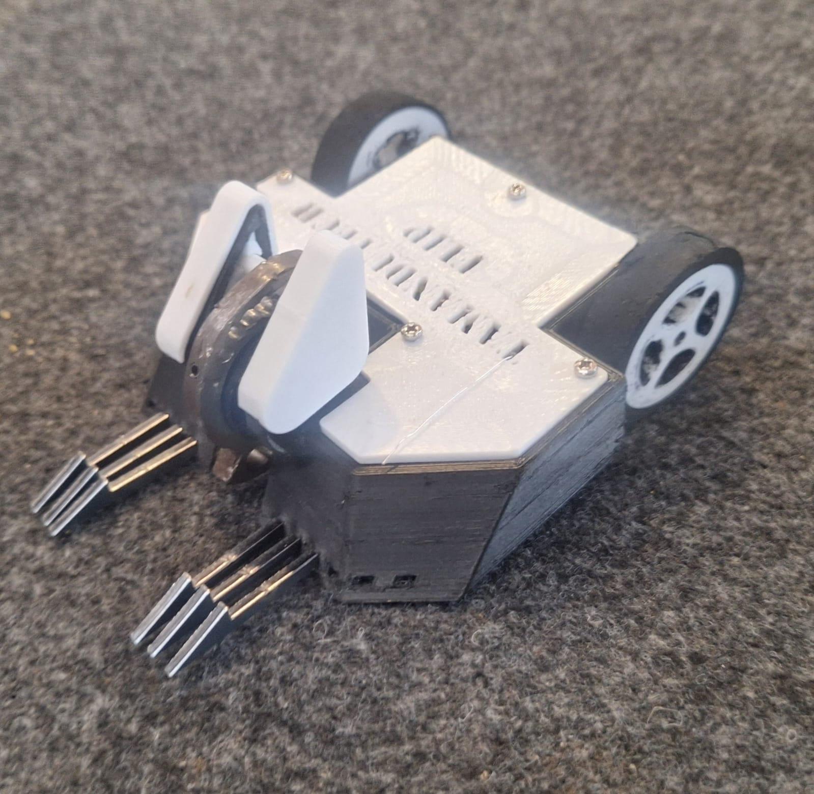
Após o término das aulas de capacitação, iniciei meu primeiro projeto oficial na Tamandutech, trabalhando ao lado da minha líder de projeto, Nicoly Regina Alves Corrêa Anselmi, e do colega Carlos Eduardo Salum Storto. Juntos, projetamos e construímos o robô de combate da categoria fairyweight, de 150 g, “Flip”, um vertical spinner inspirado em um dos maiores campeões da BattleBots, o lendário Bite Force, da equipe norte-americana Aptyx Designs, referência mundial em robustez e desempenho. Sempre admirei a consistência e eficiência desse robô, e buscávamos refletir esses mesmos princípios em nosso projeto.
Etapa de Desenvolvimento
Eletrônica:
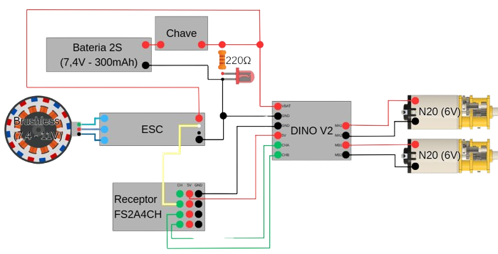
Iniciamos o trabalho pela parte eletrônica, buscando um sistema funcional, seguro e eficiente. Utilizamos uma placa controladora Dino V2 da Robocore, dois motores N20 de 1000 rpm para a locomoção e um motor brushless de 15.000 rpm para a arma principal. O controle da arma foi realizado através de um ESC, Electronic Speed Controller, garantindo a proteção do circuito contra sobrecargas. Além disso, implementamos um receptor FlySky para comunicação via rádio e o sistema obrigatório de segurança exigido nas competições: um LED indicador de energia e uma chave geral de desligamento rápido.
Estrutura e Chassi:
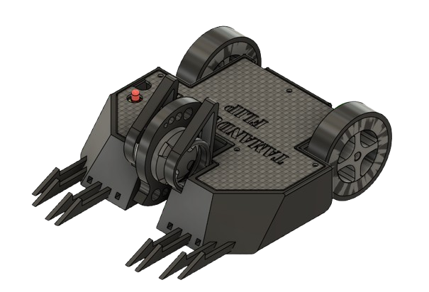
A construção do chassi foi uma das etapas mais trabalhosas e desafiadoras. Produzimos diversas versões e ajustes, até chegarmos a um design otimizado. O chassi foi impresso em 3D com TPU, poliuretano termoplástico, material altamente flexível e recomendado para robôs de combate por sua resistência ao impacto e capacidade de absorção de choques.
Rodas e Pneus:
Optamos por fabricar nossas próprias rodas e pneus, garantindo personalização total e melhor desempenho. As rodas foram impressas em PETG, um polímero mais rígido e leve, enquanto os pneus foram moldados com cola de poliuretano, PU, em moldes desenvolvidos por nós mesmos. O resultado foi um conjunto resistente, durável e com excelente aderência, essencial em combates intensos.
RoboChallenger 2025
Com o Flip pronto, participamos da nossa primeira competição oficial, a RoboChallenger, realizada no Instituto Mauá de Tecnologia, entre os dias 3 e 5 de outubro de 2025.
Dia 1 - Inspeção Técnica:
O primeiro dia foi dedicado à inspeção dos robôs. As equipes apresentaram seus projetos aos juízes, que verificaram os critérios de segurança, peso, integridade elétrica e funcionalidade. O Flip passou por todas as etapas sem nenhuma necessidade de alterações ou ajustes, o que já foi motivo de orgulho e alívio para nós.
Dia 2 - Lutas Oficiais:
Nosso primeiro combate foi contra o robô Quero-Quero, da equipe Phoenix, e vencemos por W.O., avançando automaticamente.
Já na segunda luta, enfrentamos o temido Roçadeira, da equipe Device Combate, um poderoso robô de design totalmente original e majoritariamente feito de titânio, o que o deixa praticamente invulnerável e também muito caro. Ele é o atual líder do ranking nacional e campeão da competição, um robô fantástico e com um projeto praticamente perfeito para a categoria.
Não é à toa que o pódio dessa competição ficou com Roçadeira V2 em primeiro, seguido do Roçadeira original em segundo, ambos da equipe Device Combate, e, em terceiro, uma réplica do Roçadeira, o robô Stake-Fair, da equipe WickedBotz. Essa grande dominância deixa claro o quão otimizado e eficiente é o projeto da Device Combate.
Como piloto, entrei ciente do desafio. Sabia que sua principal vulnerabilidade eram as rodas expostas, e planejei atacar por esse ponto. Contudo, a alta mobilidade do campeão mostrou que seu único ponto fraco não era nem um pouco fácil de alcançar. Em todas as tentativas de aproximação, ele fugia e me acertava com sua poderosa arma. Com isso, logo no segundo golpe, a fina lâmina de titânio do Roçadeira atingiu o chassi do Flip, abrindo uma fenda que expôs a bateria e danificou o receptor, resultando em nocaute imediato.
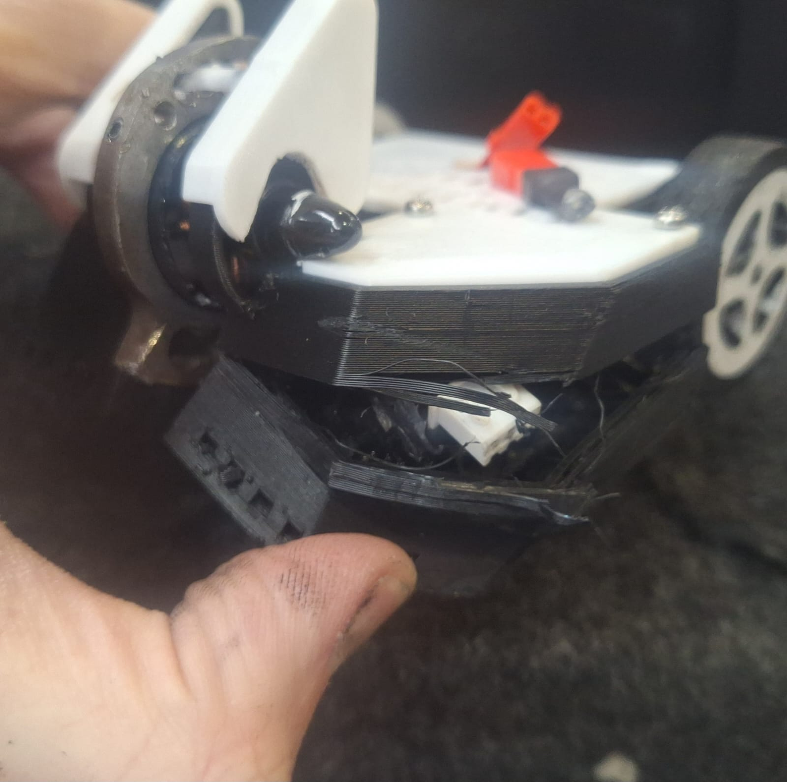
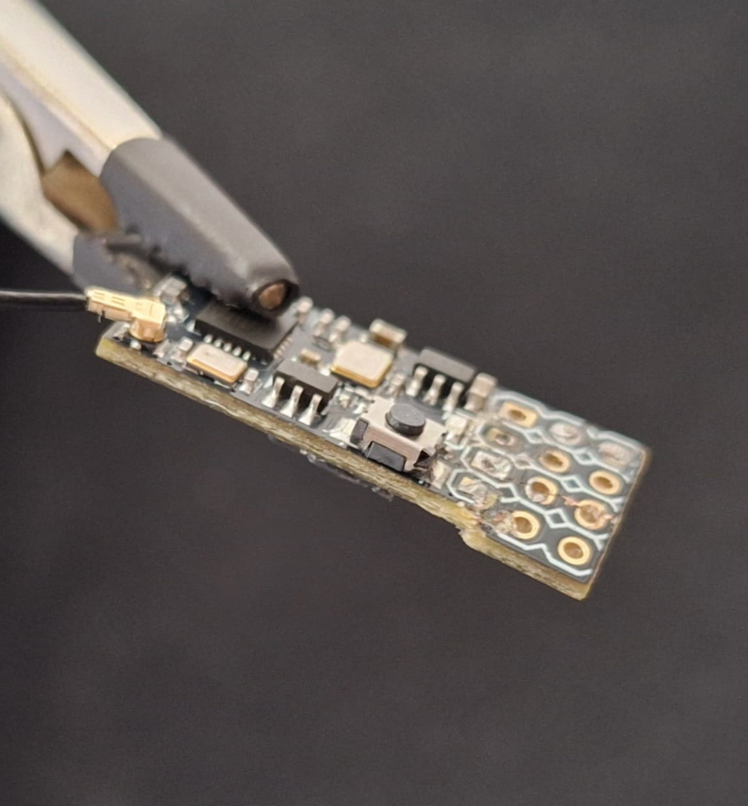
Apesar da derrota, mantivemos a calma, substituímos as peças danificadas e ajustamos o sistema para o próximo confronto.
Na terceira luta, enfrentamos o Lohki, também da equipe Phoenix, um robô com uma construção relativamente simples, tratando-se basicamente de uma rampa, mas extremamente ágil, sendo capaz de me flanquear e marcar vários pontos no processo. Com maior mobilidade, ele venceu por 24 a 9 pontos. Após a partida, trocamos experiências técnicas e dicas de melhoria com a equipe adversária, um dos aspectos mais valiosos das competições.
Com essa derrota, fomos eliminados do torneio, encerrando nossa participação em 12º lugar geral. Apesar do resultado modesto, saímos satisfeitos com o desempenho e, principalmente, com o aprendizado obtido em cada etapa.
Dia 3 - Aprendizado e Colaboração:
No último dia do evento, não tivemos mais combates, mas aproveitei a oportunidade para interagir com outras equipes, observar de perto os robôs finalistas e aprender novas soluções de design e estratégia. Também ajudei colegas da Tamandutech que ainda estavam competindo, participando do suporte técnico, da substituição de peças e dos ajustes nos robôs.
Reflexão e Próximos Passos
Participar da Tamandutech e estrear na RoboChallenger foi uma experiência transformadora. Aprendi não apenas sobre engenharia e robótica, mas também sobre trabalho em equipe, tomada de decisão sob pressão e resiliência diante dos desafios.
Atualmente, continuo aprimorando o Flip, com foco em aumentar a durabilidade do chassi, otimizar a arma principal e aprimorar a distribuição de peso, buscando um desempenho mais equilibrado e competitivo.
Nosso objetivo é claro: voltar às arenas mais fortes, mais preparados e prontos para enfrentar novamente o lendário Roçadeira, desta vez em condições de vitória.
5º Summit Nacional de Robótica 2025
Para minha segunda competição, organizada pela equipe WickedBotz e realizada entre os dias 20 e 22 de novembro, no Centro de Educação Peter Pan, em Balneário Piçarras – SC, a experiência foi extremamente enriquecedora, marcada por inúmeros aprendizados técnicos e significativa evolução pessoal e coletiva da equipe.
Apesar de não se tratar de uma competição oficial da Robocore e, portanto, não pontuar para o ranking nacional, isso não significou, em nenhum momento, que o evento seria levado de forma leviana. Pelo contrário: buscamos equilibrar a diversão com o aperfeiçoamento de técnicas já conhecidas, ao mesmo tempo em que aproveitamos a oportunidade para testar soluções novas e abordagens experimentais que, em competições mais formais, não seriam viáveis devido aos riscos envolvidos.
Os desafios começaram ainda na fase de preparação. Por se tratar de um evento realizado no final do ano, período em que a equipe costuma enfrentar maiores restrições financeiras, tivemos limitações no orçamento e, consequentemente, na disponibilidade de peças e componentes para reposição. Durante os testes prévios, o ESC responsável pela arma do robô Flip acabou queimando e, infelizmente, não dispúnhamos de um componente reserva. Diante disso, fomos obrigados a competir sem o sistema de arma.
Para contornar esse problema, desenvolvemos um novo chassi no formato de rampa. Contudo, optamos por ir além de uma solução puramente funcional. A proposta foi criar um robô com forte apelo estético, inspirado no icônico Nissan Skyline GT-R R34 do personagem Brian O’Conner, da franquia Velozes e Furiosos. Embora essa escolha não resultasse no robô mais competitivo do evento, sem dúvida o Flip se destacou como um dos modelos mais estilizados da competição. Além disso, o projeto nos permitiu explorar diversas ferramentas e técnicas de design, especialmente o uso do Autodesk Fusion 360 para o desenvolvimento do chassi e dos decalques, bem como um estudo aprofundado para garantir que o modelo fosse corretamente impresso em uma impressora 3D.
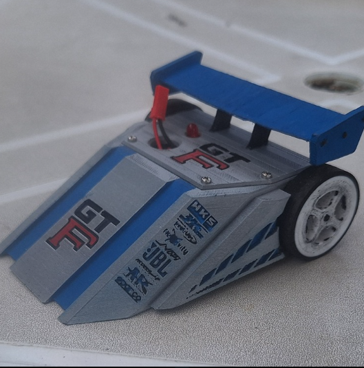
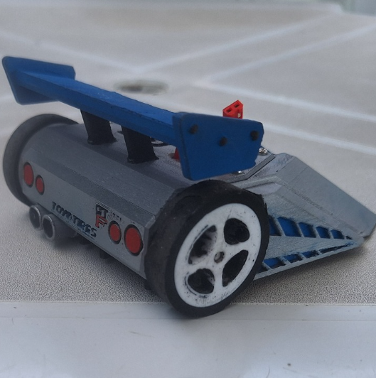
Ao final da competição, mesmo com um chassi menos competitivo do ponto de vista técnico, o Flip apresentou um desempenho bastante satisfatório. Nesta edição, conquistamos três vitórias, representando uma evolução em relação à competição anterior, na qual havíamos obtido apenas duas. Esse progresso foi resultado direto da alteração da placa controladora dos motores e da substituição dos próprios motores, o que tornou o robô significativamente mais rápido, responsivo e fácil de controlar.
A equipe esteve muito próxima de alcançar uma quarta vitória, que acabou não se concretizando devido a uma falha de comunicação interna. Uma configuração no controle foi alterada inadvertidamente, tornando o robô incontrolável durante a luta, o que levou à eliminação frente a um adversário tecnicamente inferior ao nosso modelo.
De forma geral, a competição foi extremamente positiva. Tratou-se de um evento mais leve, divertido e colaborativo, que proporcionou aprendizados valiosos não apenas do ponto de vista técnico, mas também no âmbito social, organizacional e do trabalho em equipe, reforçando a importância desse tipo de experiência para o desenvolvimento dos participantes.
Por fim, apesar de o Flip ainda não ter alcançado o resultado idealizado, é importante parabenizar a equipe como um todo, que ao longo da competição conquistou um total de 15 troféus em todas as categorias. Destaco, de forma especial, a equipe Combate, que vem demonstrando uma evolução constante, tornando-se cada vez mais sólida, única e competitiva. Nesta edição, o Combate obteve mais três troféus, incluindo um de primeiro lugar, resultado que evidencia o empenho coletivo, o amadurecimento técnico e o excelente trabalho desenvolvido por todos os envolvidos.
RSM Challenge Internacional 2026
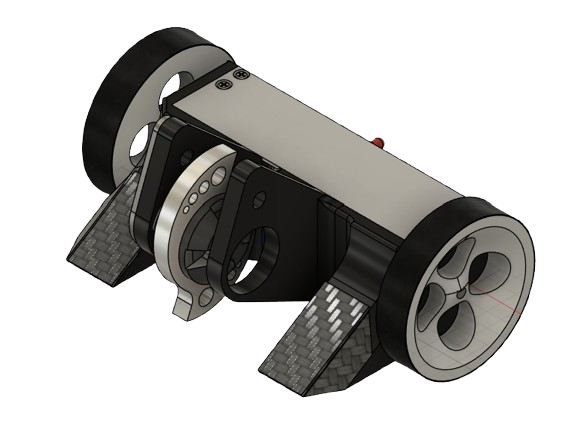
Depois de alguns meses sem participar de competições, finalmente retornamos às arenas com a versão Mk4 do Flip. Essa nova versão representou um marco importante na trajetória do projeto, pois trouxe avanços expressivos em praticamente todas as frentes: estrutura mecânica, distribuição interna dos componentes, sistema de locomoção, projeto da arma, organização eletrônica, redução de massa e confiabilidade geral do robô.
Pela primeira vez desde o início do desenvolvimento do Flip, tivemos a sensação de possuir um projeto verdadeiramente sólido, coerente e competitivo. Não se tratava apenas de uma atualização incremental em relação às versões anteriores, mas de uma reformulação profunda. O robô foi praticamente redesenhado do zero: o chassi foi totalmente alterado, a disposição dos motores foi revista, a arma passou por melhorias relevantes, as rodas foram reprojetadas e toda a organização interna foi repensada com o objetivo de tornar o conjunto mais eficiente, compacto, resistente e competitivo.
Do ponto de vista elétrico, embora a arquitetura teórica do sistema não tenha sofrido grandes alterações — ou seja, a planta elétrica permaneceu semelhante à utilizada desde as primeiras versões —, a execução prática evoluiu enormemente. Nesta versão, houve um cuidado muito maior com a montagem, com a soldagem dos componentes, com o dimensionamento dos fios e com a disposição da eletrônica dentro do robô. Esse refinamento resultou em uma eletrônica consideravelmente mais leve, com redução aproximada de 50 gramas, além de fios muito menores e melhor organizados.
Essa compactação permitiu acomodar os componentes em um espaço muito mais bem planejado, reduzindo sobras internas e evitando regiões vulneráveis ou mal aproveitadas. Por outro lado, essa escolha também trouxe uma consequência importante: a manutenção ficou muito mais difícil. Como a eletrônica foi inserida de maneira bastante justa dentro do chassi, praticamente qualquer intervenção exigia a remoção completa do conjunto eletrônico. Isso dificultava ajustes rápidos durante a competição e tornava inviável realizar reparos simples diretamente no robô.
Apesar disso, a grande surpresa positiva foi que praticamente não precisamos realizar manutenção na parte eletrônica. Ao longo de toda a competição, antes das lutas, durante os combates e mesmo após o término do evento, a eletrônica se manteve extremamente confiável. A única substituição necessária foi a de um motor de locomoção, que aparentemente falhou por baixa qualidade do próprio componente, e não por falha no projeto elétrico. Mesmo após impactos severos e lutas bastante agressivas, o sistema eletrônico permaneceu íntegro e funcional, o que demonstrou que as decisões de organização, proteção e compactação foram acertadas.
Na parte mecânica, as mudanças foram ainda mais significativas. A partir da observação de outro projeto da equipe, percebemos que afastar os motores de locomoção e concentrar os demais componentes o mais próximo possível do eixo dos motores poderia melhorar substancialmente o comportamento dinâmico do robô. Essa ideia serviu como ponto de partida para o desenvolvimento da versão Mk3 do Flip, que chegou a ser modelada em CAD, mas não foi fabricada. Antes mesmo da impressão e dos testes físicos, diversos problemas potenciais foram identificados, o que levou à decisão de abandonar essa versão intermediária e partir diretamente para o desenvolvimento da Mk4.
A proposta central da versão Mk4 era afastar os motores de locomoção e posicionar todos os componentes principais entre os eixos, criando um conjunto mais equilibrado, compacto e responsivo. Essa decisão se mostrou extremamente bem-sucedida. Pela primeira vez, o Flip apresentou uma locomoção realmente rápida, comparável à dos demais robôs da competição, mesmo utilizando motores inferiores aos de muitos adversários. Além da velocidade, o robô também se tornou muito mais estável, controlável e previsível, o que facilitou bastante a pilotagem durante os combates.
Outro ponto importante foi a tentativa de confinar toda a eletrônica em uma região mais protegida do chassi, reduzindo sua exposição direta aos impactos. Essa solução também se mostrou acertada, uma vez que, como mencionado anteriormente, não tivemos falhas eletrônicas relevantes durante a competição. O robô apanhou bastante em algumas lutas, sofreu impactos diretos e passou por combates intensos, mas a eletrônica permaneceu intacta, o que reforça a qualidade da nova organização interna.
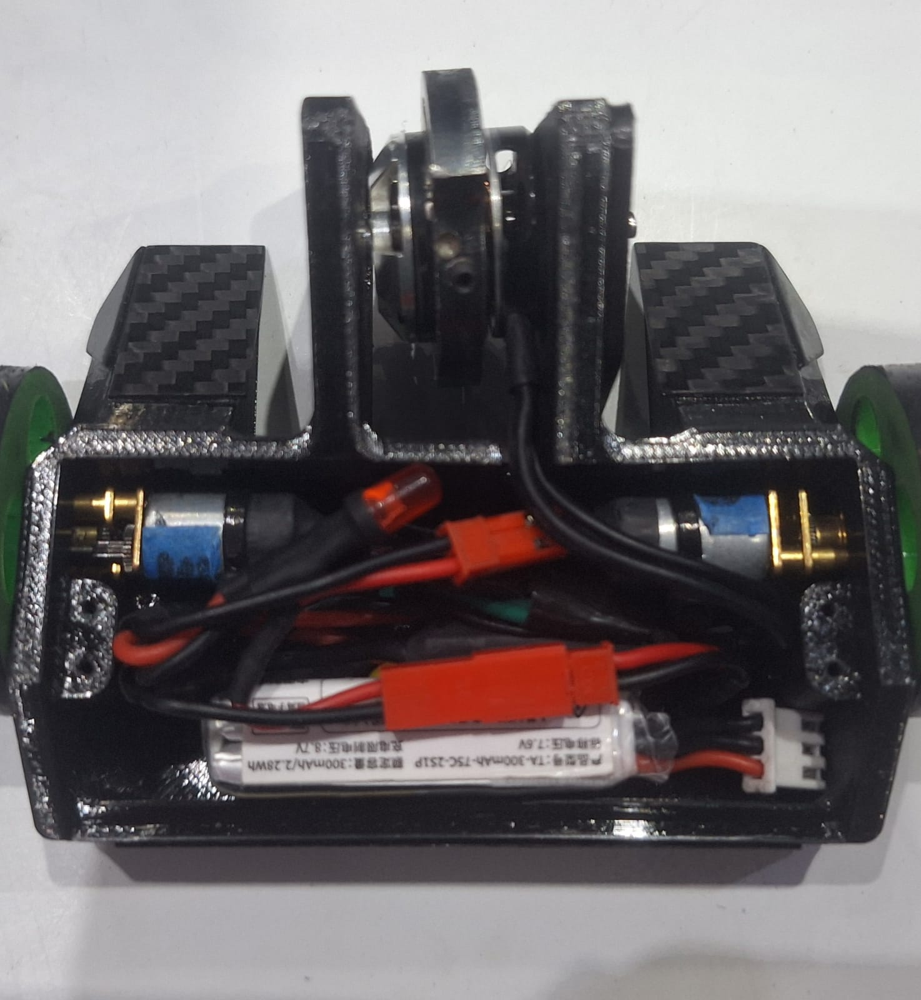
A arma também recebeu uma evolução importante. Embora o desenho geral tenha permanecido semelhante ao conceito original, utilizamos um novo material: aço Hardox. Esse material foi obtido por meio de uma doação de integrantes de outra equipe de combate, que nos cederam uma chapa para corte a laser. O resultado foi excelente. A nova arma se mostrou extremamente resistente, relativamente leve e com grande capacidade destrutiva. Mesmo após impactos intensos contra adversários bem construídos, a arma praticamente não apresentou danos, o que evidenciou sua robustez e seu potencial ofensivo.
Outro avanço relevante foi o desenvolvimento de um novo tipo de roda. Historicamente, sempre tivemos dificuldades com as rodas do Flip, principalmente em relação à aderência, resistência e massa. As soluções anteriores frequentemente eram pesadas demais ou não ofereciam o atrito necessário para uma boa locomoção. Em geral, muitas equipes utilizam rodas de neoprene, por serem muito leves, mas eu particularmente nunca gostei muito dessa solução, pois acredito que elas não oferecem o nível de aderência ideal para o nosso tipo de projeto.
Por isso, decidimos desenvolver nosso próprio modelo. Criamos uma roda impressa em TPU 65A, com baixo preenchimento e paredes reduzidas, tornando-a extremamente leve. Como a própria característica do TPU já oferece boa aderência, não era necessário preencher toda a superfície da roda com material adicional. Assim, utilizamos apenas uma borda de cola PU, funcionando como uma espécie de pneu. O resultado foi uma roda tão leve quanto as de neoprene, mas muito mais resistente e com atrito superior. Essa solução se mostrou tão eficiente que chamou a atenção de outras equipes, que vieram nos perguntar como havíamos produzido as rodas.
De forma geral, o projeto chegou à competição em uma condição muito superior às versões anteriores. O Flip finalmente apresentou o efeito giroscópico esperado em um robô vertical spinner competitivo. Embora esse efeito seja, em teoria, um desafio de controle, ele também pode ser utilizado estrategicamente quando bem compreendido e dominado. Nesta versão, o efeito giroscópico apareceu de forma controlável e até vantajosa em alguns momentos, contribuindo para o comportamento agressivo e característico do robô.
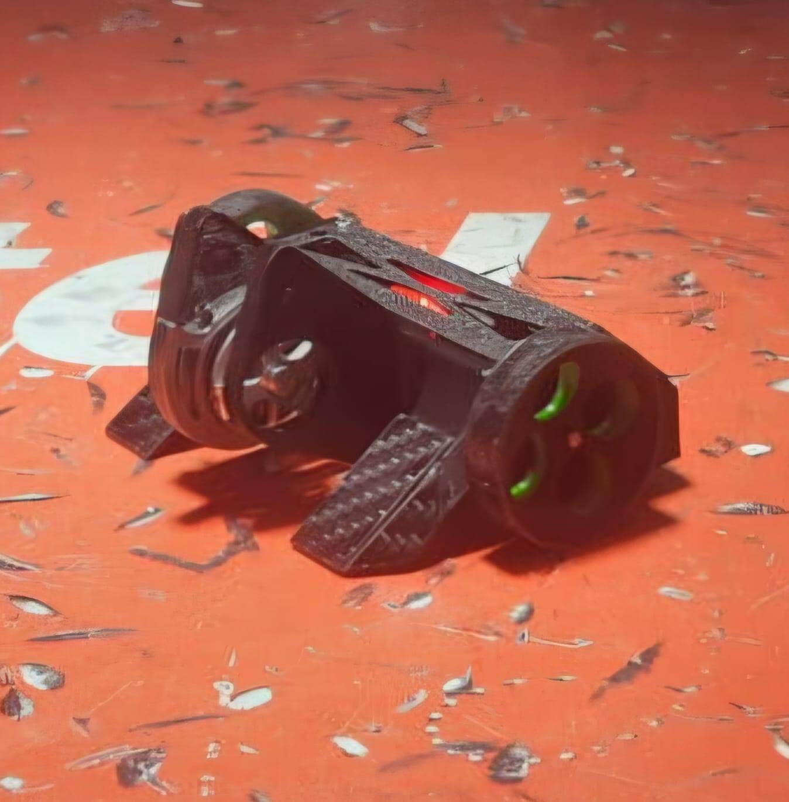
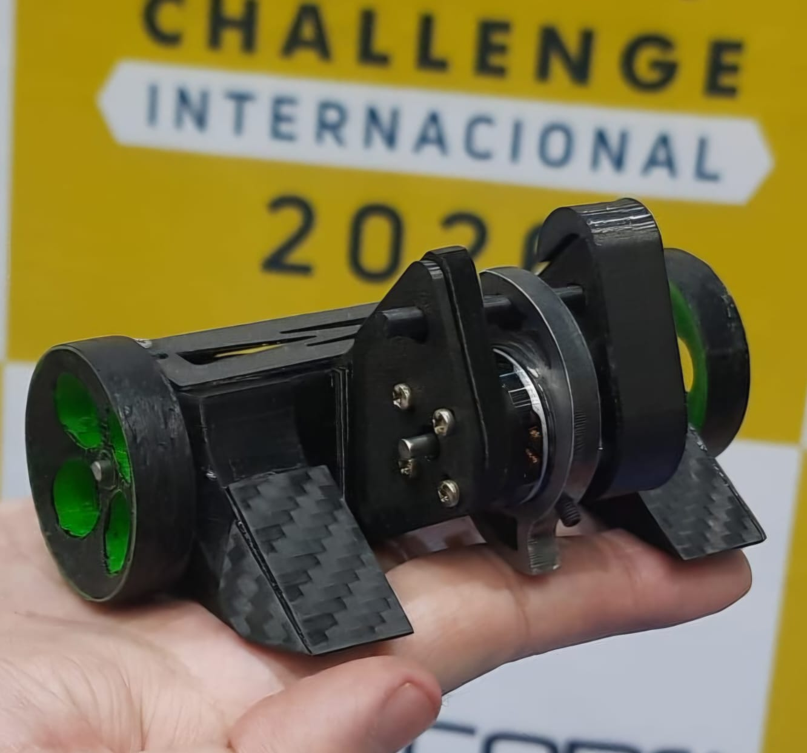
Apesar de o resultado final não ter sido exatamente o esperado em número de vitórias, o desempenho técnico foi bastante satisfatório. O Flip venceu apenas uma luta oficialmente, mas realizou outros dois combates muito fortes, nos quais os adversários, mesmo saindo vencedores, terminaram consideravelmente danificados. Isso demonstrou que o robô possuía real capacidade ofensiva e competitiva. Além disso, como já vinha acontecendo em versões anteriores, o Flip passou tranquilamente por todas as etapas de inspeção, tanto estática quanto dinâmica, sem apresentar problemas. Esse é sempre um motivo de orgulho, pois indica que o projeto atende aos requisitos técnicos e de segurança da competição.
Agora, acredito que o robô precise apenas de ajustes pontuais e melhorias específicas para se tornar ainda mais competitivo. A base do projeto está sólida. O conceito funciona, a eletrônica se mostrou confiável, a arma teve excelente desempenho, a locomoção evoluiu muito e a estrutura geral suportou bem os impactos. Com pequenos refinamentos, acredito que o Flip poderá competir em alto nível e, futuramente, disputar posições de pódio.
Na primeira luta, enfrentamos o Shikanokonok, da equipe Coffee Break League. Era um ótimo projeto, do tipo egg beater, muito consistente, rápido e equipado com uma arma criativa e eficiente. No início do confronto, os dois robôs se enfrentaram de igual para igual. O Flip apresentou excelente desempenho, conseguiu fazer o adversário voar diversas vezes e não sofreu danos significativos.
No entanto, depois de algum tempo de luta, o motor esquerdo de locomoção perdeu potência sem motivo aparente. Não havíamos sofrido nenhum impacto que justificasse a falha, o que indica que o problema provavelmente estava relacionado à baixa qualidade do próprio motor. Com a perda de potência, o robô ficou muito mais lento e passou a apanhar com maior frequência. Para preservar o Flip para uma possível luta posterior, decidi interromper o confronto, resultando em derrota por nocaute.
Apesar da derrota, fiquei satisfeito com o desempenho. Ficou claro que o problema não estava no projeto como um todo, mas especificamente na limitação dos motores utilizados. O robô não sofreu danos estruturais importantes, e a eletrônica permaneceu perfeita. A única substituição necessária foi a do motor que parou de funcionar.
Em contrapartida, ao conversarmos posteriormente com a equipe adversária, descobrimos que o Shikanokonok havia terminado a luta em condições bastante danificadas. Conseguimos amassar significativamente a arma deles, enquanto a nossa não sofreu sequer um arranhão. Isso foi extremamente animador, pois mostrou o potencial destrutivo da nova arma do Flip e confirmou que estávamos desenvolvendo um robô com capacidade real de causar danos relevantes aos adversários.
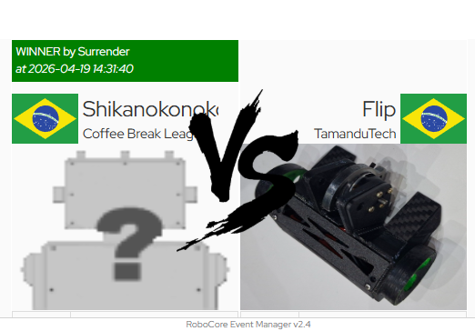
Na segunda luta, enfrentamos o ThePanga, da equipe Banana Bots. Esse foi provavelmente o robô mais rápido que eu havia visto até então. Ele era do mesmo tipo que o Flip, um vertical spinner, mas possuía uma movimentação extremamente veloz. Segundo a equipe, era o único robô da competição utilizando motores de locomoção de 2000 rpm, enquanto a maioria dos competidores utilizava motores entre 500 e 1000 rpm. Além disso, o ThePanga utilizava diversos ímãs para aumentar a aderência ao solo, o que contribuía ainda mais para sua estabilidade e agressividade.
Mesmo diante de um adversário tão rápido, consegui manter o controle do Flip e disputar a luta de igual para igual. O ThePanga realmente conseguia se movimentar com muita velocidade e, em alguns momentos, acertou mais golpes no nosso robô. No entanto, o dano causado pelo Flip foi muito mais significativo. Durante o combate, conseguimos arrancar dois dos quatro forks do adversário e deixar seu chassi bastante danificado. Enquanto isso, o Flip novamente saiu praticamente ileso, sem danos relevantes na arma, na estrutura ou na eletrônica.
Após uma luta longa, intensa e bastante disputada, conquistamos a primeira vitória oficial do projeto. Esse resultado foi muito importante para validar a evolução da Mk4 e aumentar nossa confiança no potencial do robô.
Um ponto interessante surgiu na conversa posterior com a equipe adversária. Eles explicaram que utilizavam vários ímãs espalhados ao longo do eixo de locomoção para melhorar a fixação no solo. Essa informação chamou minha atenção, pois nós já havíamos testado uma solução semelhante anteriormente, mas abandonamos temporariamente a ideia porque nossos motores não tinham torque suficiente para lidar com o aumento da aderência. Depois dessa experiência, ficou claro que vale a pena retomar esse estudo, buscando encontrar a distância ideal de posicionamento dos ímãs para melhorar a tração sem comprometer demais a velocidade e a dirigibilidade.
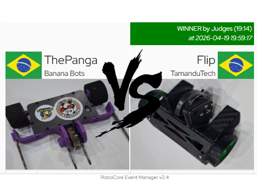
Por fim, nossa última luta foi contra o Narcisalha, da equipe SJBots, um horizontal spinner com uma arma enorme e bastante perigosa. Para esse confronto, fiz uma preparação específica no Flip, reforçando com cola epóxi alguns pontos que considerei mais vulneráveis. Essa decisão se mostrou acertada, pois o chassi não sofreu danos significativos durante a luta, mesmo enfrentando impactos fortes de uma arma horizontal.
Entretanto, cometi um erro antes do combate. Ao longo da competição, outros robôs da nossa equipe estavam sendo eliminados por perderem rodas durante as lutas. Isso me deixou preocupado. O Flip, até então, nunca havia apresentado esse problema. Na verdade, em versões anteriores, eu sequer colava as rodas, e mesmo assim elas nunca saíam. No entanto, por receio de repetir o problema observado nos outros robôs da equipe, decidi ir contra a minha própria experiência e colei as rodas antes da luta.
Não posso afirmar com certeza que essa decisão causou a derrota, mas é uma hipótese que pretendo investigar com testes posteriores. O fato é que, aproximadamente no meio da luta, que até então estava bastante equilibrada, o Flip perdeu uma das rodas. Com isso, fiquei praticamente sem movimentação e não consegui mais lutar de forma efetiva. Mesmo resistindo até o final do combate, a perda de mobilidade teve um impacto enorme na avaliação da luta, resultando na nossa derrota e eliminação da competição.
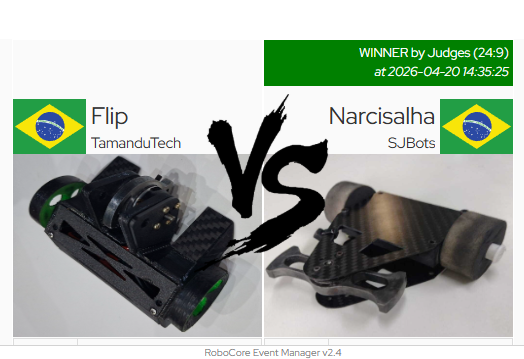
Apesar da eliminação e de eu esperar um desempenho um pouco melhor em termos de resultado final, fiquei bastante satisfeito com a evolução do projeto. Essa foi minha primeira competição internacional, e o Flip terminou em 17º lugar entre mais de 80 robôs. Ainda está longe do resultado que almejo, mas representa um progresso muito significativo em relação às versões anteriores.
O mais importante é que, desta vez, o robô demonstrou ter uma base realmente competitiva. Não foi um projeto que dependeu de sorte ou que funcionou apenas parcialmente. Pelo contrário: o Flip mostrou velocidade, resistência, potência ofensiva, boa confiabilidade eletrônica e capacidade de enfrentar robôs fortes sem sair destruído. As derrotas ocorreram por falhas pontuais e por detalhes que podem ser corrigidos, não por problemas estruturais graves de concepção.
Com isso, já começo a pensar nas melhorias para a versão Mk5. Acredito que os próximos passos envolvem estudar melhor os motores de locomoção, testar novamente o uso de ímãs para aumentar a aderência, avaliar com mais cuidado a fixação das rodas, facilitar um pouco a manutenção interna e realizar pequenos ajustes no chassi e na distribuição de massa. Se essas melhorias forem bem executadas, acredito que a próxima versão poderá finalmente alcançar um saldo positivo de vitórias, vencendo mais lutas do que perdendo.
De maneira geral, termino essa competição feliz com o resultado e, principalmente, com a sensação de que o projeto finalmente amadureceu. O Flip ainda tem muito a evoluir, mas agora existe uma base sólida sobre a qual podemos trabalhar. Pela primeira vez, sinto que estamos realmente próximos de transformar o robô em um competidor consistente, agressivo e capaz de disputar boas colocações nas próximas competições.